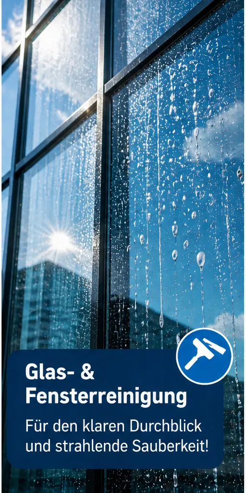

Glasreinigung
Sorgfältige Reinigung von Glasflächen, Trennwänden und sichtbaren Flächen mit Blick auf ein klares, gepflegtes Erscheinungsbild.
Maher Objektservice
Professionelle Reinigung und Entrümpelungen mit kostenfreier Besichtigung, klarer Abstimmung und Zufriedenheitsgarantie.

Leistungen
Von einzelnen Fenstern bis zur laufenden Objektpflege: Jede Anfrage wird passend zur Situation besprochen, damit Aufwand, Umfang und Termin sauber geklärt sind.
Sorgfältige Reinigung von Glasflächen, Trennwänden und sichtbaren Flächen mit Blick auf ein klares, gepflegtes Erscheinungsbild.
Fenster, Rahmen und erreichbare Bereiche werden abgestimmt gereinigt, ob für private Räume, Gewerbeflächen oder regelmäßige Pflege.
Reinigung von Objektbereichen, Treppenhäusern, Eingangsbereichen, Büros, Airbnbs und Ferienwohnungen, Arztpraxen, Einzelhandel, Supermärkten wie REWE oder EDEKA, Bäckereien, Friseursalons sowie gewerblichen Objekten unterschiedlichster Branchen und Nutzung.
Unterstützung beim Räumen, Sortieren, Haushaltsauflösungen und Vorbereiten von Flächen, damit wieder Platz, Struktur und Übersicht entsteht.
Warum Maher Objektservice
Keine überzogenen Versprechen, keine künstlichen Referenzen. Stattdessen eine kostenfreie Besichtigung, klare Abstimmung und eine Umsetzung, die zum Objekt passt.
Klare Aussagen zu Umfang, Termin und Vorgehen, bevor die Arbeit beginnt.
Der Besichtigungstermin ist kostenfrei und dient der fairen Einschätzung vor Ort.
Wenn etwas nicht passt, wird es offen besprochen und sauber nachgebessert.
Einmalige Einsätze und wiederkehrende Leistungen werden individuell besprochen.
Ablauf
Kurz schildern, welche Leistung gebraucht wird und worum es vor Ort geht.
Die wichtigsten Eckdaten werden geklärt: Fläche, Umfang, Termin und Zugang.
Das Angebot wird nachvollziehbar abgestimmt, bevor die Arbeit eingeplant wird.
Die Leistung wird sauber, ruhig und passend zur Situation ausgeführt.
Einblicke
Gezielt ausgewählte Motive für Gebäudereinigung, Entrümpelungen sowie Glas- und Fensterreinigung. Bewusst reduziert eingesetzt, damit die Seite hochwertig und übersichtlich bleibt.
Termin anfragenKontakt
Beschreiben Sie Ihr Anliegen kurz im Formular. Der Besichtigungstermin ist kostenfrei. Danach wird geklärt, welche Leistung passt und wie die Umsetzung geplant werden kann.
Falls das Formular nicht direkt angezeigt wird, senden Sie Ihr Anliegen bitte mit Kontaktdaten und kurzem Leistungswunsch an info@maher-objektservice.de.